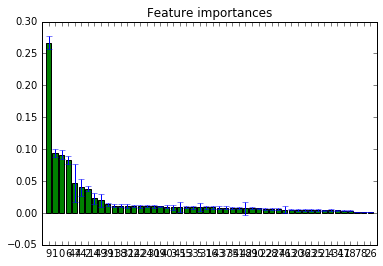
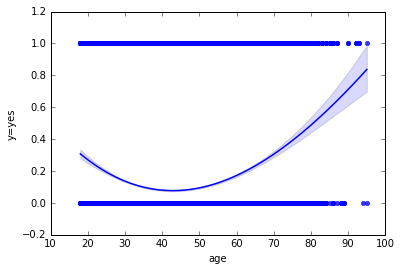
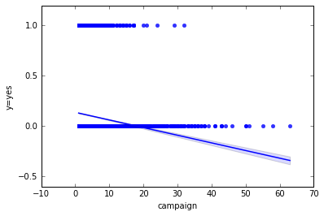

DEPRECATED: IPython.core.usage.default_gui_banner is deprecated and will be removed
Python 3.5.2 |Anaconda 4.2.0 (64-bit)| (default, Jul 5 2016, 11:41:13) [MSC v.1900 64 bit (AMD64)]
Type "copyright", "credits" or "license" for more information.
IPython 5.1.0 -- An enhanced Interactive Python.
? -> Introduction and overview of IPython's features.
%quickref -> Quick reference.
help -> Python's own help system.
object? -> Details about 'object', use 'object??' for extra details.
In [1]: import numpy as np
...: import matplotlib.pyplot as plt
...: import pandas as pd
...: from sklearn.feature_extraction import DictVectorizer
...: import seaborn as sns
...: %matplotlib inline
...: from pandas.plotting import scatter_matrix
...:
In [2]: data = pd.read_csv("bank-full.csv", sep=';')
In [3]: data.head()
...:
Out[3]:
age job marital education ... pdays previous poutcome y
0 58 management married tertiary ... -1 0 unknown no
1 44 technician single secondary ... -1 0 unknown no
2 33 entrepreneur married secondary ... -1 0 unknown no
3 47 blue-collar married unknown ... -1 0 unknown no
4 33 unknown single unknown ... -1 0 unknown no
[5 rows x 17 columns]
In [4]: data_dict = data.T.to_dict().values() #converting dataframes to dict
In [5]: vec = DictVectorizer()
...: signal_array = vec.fit_transform(data_dict).toarray()
...: feature_names = vec.get_feature_names()
...:
In [6]: df = pd.DataFrame(signal_array,columns=feature_names)
...: df.head()
Out[6]:
age balance campaign ... previous y=no y=yes
0 58.0 2143.0 1.0 ... 0.0 1.0 0.0
1 44.0 29.0 1.0 ... 0.0 1.0 0.0
2 33.0 2.0 1.0 ... 0.0 1.0 0.0
3 47.0 1506.0 1.0 ... 0.0 1.0 0.0
4 33.0 1.0 1.0 ... 0.0 1.0 0.0
[5 rows x 53 columns]
In [7]: import numpy as np
...: import matplotlib.pyplot as plt
In [8]: from sklearn.datasets import make_classification
...: from sklearn.ensemble import RandomForestClassifier
In [9]: X = signal_array[:,:-2]
...: X = np.hstack((X[:,:14],X[:,15:]))
...: y = signal_array[:,-1]
...: # Build a forest and compute the feature importances
...: forest = RandomForestClassifier(n_estimators=250,
...: random_state=0)
...:
...: forest.fit(X, y)
...: importances = forest.feature_importances_
...: std = np.std([tree.feature_importances_ for tree in forest.estimators_],
...: axis=0)
...: indices = np.argsort(importances)[::-1]
...:
In [10]: print("Feature ranking:")
...:
...: for f in range(X.shape[1]):
...: print("%d. feature %s (%f)" % (f + 1, feature_names[indices[f]], importances[indices[f]]))
...:
...:
...: # Plot the feature importances of the forest
...: plt.figure()
...: plt.title("Feature importances")
...: plt.bar(range(X.shape[1]), importances[indices],
...: color="g", yerr=std[indices], align="center")
...: plt.xticks(range(X.shape[1]), indices)
...: plt.xlim([-1, X.shape[1]])
...: plt.show()
Feature ranking:
1. feature duration (0.267144)
2. feature balance (0.094119)
3. feature age (0.091562)
4. feature day (0.082607)
5. feature poutcome=other (0.047187)
6. feature month=sep (0.040061)
7. feature campaign (0.037795)
8. feature housing=no (0.022667)
9. feature poutcome=unknown (0.019870)
10. feature month=jun (0.013227)
11. feature education=secondary (0.011511)
12. feature month=jul (0.011383)
13. feature marital=single (0.011248)
14. feature education=tertiary (0.011052)
15. feature month=nov (0.010620)
16. feature job=student (0.010410)
17. feature marital=divorced (0.010283)
18. feature job=housemaid (0.010147)
19. feature month=mar (0.009793)
20. feature contact=cellular (0.009165)
21. feature pdays (0.009032)
22. feature housing=yes (0.009019)
23. feature month=apr (0.008970)
24. feature contact=unknown (0.008889)
25. feature marital=married (0.008849)
26. feature job=admin. (0.008510)
27. feature month=oct (0.008265)
28. feature month=jan (0.008187)
29. feature month=dec (0.007952)
30. feature month=may (0.007504)
31. feature poutcome=success (0.007171)
32. feature loan=yes (0.007068)
33. feature education=primary (0.007017)
34. feature job=self-employed (0.006337)
35. feature loan=no (0.006228)
36. feature job=unknown (0.006177)
37. feature poutcome=failure (0.005262)
38. feature education=unknown (0.005184)
39. feature job=management (0.005130)
40. feature month=feb (0.004869)
41. feature job=services (0.004755)
42. feature job=technician (0.004497)
43. feature job=retired (0.004361)
44. feature contact=telephone (0.004277)
45. feature month=aug (0.003946)
46. feature job=blue-collar (0.003741)
47. feature job=entrepreneur (0.003251)
48. feature default=no (0.001284)
49. feature default=yes (0.001228)
50. feature job=unemployed (0.001188)

In [11]: ax = sns.regplot(x="age", y="y=yes", order=3, data=df, truncate=True)
...:

In [12]: ax = sns.regplot(x="campaign", y="y=yes", order=1, data=df, truncate=True)

In [13]: df.loc[(df['campaign'] >15) & (df['y=yes']==1)]
Out[13]:
age balance campaign ... previous y=no y=yes
3331 50.0 461.0 32.0 ... 0.0 0.0 1.0
10421 27.0 18188.0 17.0 ... 0.0 0.0 1.0
16637 38.0 593.0 24.0 ... 0.0 0.0 1.0
17104 57.0 63.0 17.0 ... 0.0 0.0 1.0
17473 27.0 192.0 17.0 ... 0.0 0.0 1.0
17873 46.0 271.0 29.0 ... 0.0 0.0 1.0
18319 50.0 2284.0 17.0 ... 0.0 0.0 1.0
21448 37.0 1435.0 16.0 ... 0.0 0.0 1.0
23221 35.0 344.0 16.0 ... 0.0 0.0 1.0
23437 33.0 2637.0 17.0 ... 0.0 0.0 1.0
30917 28.0 4987.0 21.0 ... 0.0 0.0 1.0
31136 28.0 0.0 20.0 ... 0.0 0.0 1.0
33699 95.0 2282.0 17.0 ... 0.0 0.0 1.0
[13 rows x 53 columns]
In [14]: Total Conversion ratio
...: sum(df['y=yes'])/sum(df['campaign'])
...:
File "<ipython-input-14-89b8dcc12aee>", line 1
Total Conversion ratio
^
SyntaxError: invalid syntax
In [15]: sum(df['y=yes'])/sum(df['campaign'])
Out[15]: 0.042326899068472104
In [16]: print ("Nth Call \t Efficiency")
...: for i in range(1,30):
...: goo = sum(df.loc[df['campaign']==i]['y=yes']) / float(df.loc[df['campaign'] >= i].shape[0])
...: print (str((i))+" \t\t "+str(goo))
...:
...:
Nth Call Efficiency
1 0.05664550662449404
2 0.050637944121155166
3 0.0407597942223981
4 0.032880406596826055
5 0.02271613008661546
6 0.021125143513203215
7 0.015339425587467363
8 0.013739802490339202
9 0.011738401341531582
10 0.009575923392612859
11 0.013377926421404682
12 0.004020100502512563
13 0.007142857142857143
14 0.005657708628005658
15 0.006514657980456026
16 0.0037735849056603774
17 0.013303769401330377
18 0.0
19 0.0
20 0.003484320557491289
21 0.004098360655737705
22 0.0
23 0.0
24 0.006097560975609756
25 0.0
26 0.0
27 0.0
28 0.0
29 0.012048192771084338
In [17]: print("For age upto 30")
...: print ("Nth Call \t Efficiency")
...: for i in range(1,30):
...: num = float(df[(df['age'] <= 30) & (df['campaign']==i) & (df['y=yes']==1)].shape[0])
...: den = 1+float(df[(df['age'] <= 30) & (df['campaign'] >= i)].shape[0])
...: print (str((i))+" \t\t "+str(num/den))
...:
...:
For age upto 30
Nth Call Efficiency
1 0.08277627648983076
2 0.07807731434384538
3 0.0585956416464891
4 0.046191247974068074
5 0.040103492884864166
6 0.02529182879377432
7 0.02981029810298103
8 0.02456140350877193
9 0.00847457627118644
10 0.005319148936170213
11 0.012738853503184714
12 0.014598540145985401
13 0.016129032258064516
14 0.009523809523809525
15 0.021052631578947368
16 0.0
17 0.025
18 0.0
19 0.0
20 0.018867924528301886
21 0.020833333333333332
22 0.0
23 0.0
24 0.0
25 0.0
26 0.0
27 0.0
28 0.0
29 0.0
In [18]: print("For age between 30-40")
...: print ("Nth Call \t Efficiency")
...: for i in range(1,30):
...: num = float(df[(df['age'] <= 40) & (df['age'] > 30) & (df['campaign']==i) & (df['y=yes']==1)].shape[0])
...: den = 1+float(df[(df['age'] <= 40) & (df['age'] > 30) & (df['campaign'] >= i)].shape[0])
...: print (str((i))+" \t\t "+str(num/den))
...:
...:
For age between 30-40
Nth Call Efficiency
1 0.04675486205336952
2 0.045751033532384015
3 0.03657084538186767
4 0.032620320855614976
5 0.017871986699916874
6 0.022675736961451247
7 0.015187849720223821
8 0.014477766287487074
9 0.016304347826086956
10 0.008291873963515755
11 0.013972055888223553
12 0.002364066193853428
13 0.005681818181818182
14 0.006779661016949152
15 0.00398406374501992
16 0.009345794392523364
17 0.005714285714285714
18 0.0
19 0.0
20 0.0
21 0.0
22 0.0
23 0.0
24 0.013157894736842105
25 0.0
26 0.0
27 0.0
28 0.0
29 0.0
In [19]: print("For age between 40-50")
...: print ("Nth Call \t Efficiency")
...: for i in range(1,30):
...: num = float(df[(df['age'] <= 50) & (df['age'] > 40) & (df['campaign']==i) & (df['y=yes']==1)].shape[0])
...: den = 1+float(df[(df['age'] <= 50) & (df['age'] > 40) & (df['campaign'] >= i)].shape[0])
...: print (str((i))+" \t\t "+str(num/den))
...:
...:
For age between 40-50
Nth Call Efficiency
1 0.042170818505338076
2 0.036985539488320354
3 0.03135717785399314
4 0.025806451612903226
5 0.01772002362669817
6 0.015833333333333335
7 0.011695906432748537
8 0.00927357032457496
9 0.01
10 0.007317073170731708
11 0.011976047904191617
12 0.0
13 0.004329004329004329
14 0.005235602094240838
15 0.006060606060606061
16 0.0
17 0.008403361344537815
18 0.0
19 0.0
20 0.0
21 0.0
22 0.0
23 0.0
24 0.0
25 0.0
26 0.0
27 0.0
28 0.0
29 0.047619047619047616
In [20]: print("For age between 50-60")
...: print ("Nth Call \t Efficiency")
...: for i in range(1,30):
...: num = float(df[(df['age'] <= 60) & (df['age'] > 50) & (df['campaign']==i) & (df['y=yes']==1)].shape[0])
...: den = 1+float(df[(df['age'] <= 60) & (df['age'] > 50) & (df['campaign'] >= i)].shape[0])
...: print (str((i))+" \t\t "+str(num/den))
...:
...:
For age between 50-60
Nth Call Efficiency
1 0.050322260783341594
2 0.03881008668242711
3 0.03519163763066202
4 0.02694136291600634
5 0.017994858611825194
6 0.02028639618138425
7 0.00530035335689046
8 0.011933174224343675
9 0.003257328990228013
10 0.015748031496062992
11 0.010050251256281407
12 0.006211180124223602
13 0.007518796992481203
14 0.0
15 0.0
16 0.0
17 0.012658227848101266
18 0.0
19 0.0
20 0.0
21 0.0
22 0.0
23 0.0
24 0.0
25 0.0
26 0.0
27 0.0
28 0.0
29 0.0
In [21]: print("For age above 60")
...: print ("Nth Call \t Efficiency")
...: for i in range(1,30):
...: num = float(df[(df['age'] > 60) & (df['campaign']==i) & (df['y=yes']==1)].shape[0])
...: den = float(df[(df['age'] > 60) & (df['campaign'] >= i)].shape[0])+1
...: print (str((i))+" \t\t "+str(num/den))
...:
...:
For age above 60
Nth Call Efficiency
1 0.2287636669470143
2 0.22657580919931858
3 0.19557195571955718
4 0.13194444444444445
5 0.16470588235294117
6 0.06818181818181818
7 0.14285714285714285
8 0.0
9 0.06666666666666667
10 0.08333333333333333
11 0.1
12 0.0
13 0.0
14 0.0
15 0.0
16 0.0
17 0.3333333333333333
18 0.0
19 0.0
20 0.0
21 0.0
22 0.0
23 0.0
24 0.0
25 0.0
26 0.0
27 0.0
28 0.0
29 0.0
In [22]: total_calls = sum(df['campaign'])
...: print(total_calls)
124956.0
In [23]: extra_calls = sum(df[df['campaign']>6]['campaign']) - 6*df[df['campaign']>6].shape[0]
...: print(extra_calls)
...:
16801.0
In [24]: reduction=100*extra_calls/total_calls
...: print(reduction)
13.445532827555299
In [25]: total_sales=float(df[df['y=yes']==1].shape[0])
...: print(total_sales)
5289.0
In [26]: less_costly_sales=float(df[(df['campaign'] <= 6) & (df['y=yes']==1)].shape[0])
...: print(less_costly_sales)
...:
5128.0
In [27]: sales_percent=100*less_costly_sales/total_sales
...: print(sales_percent)
96.95594630364909
In [28]: